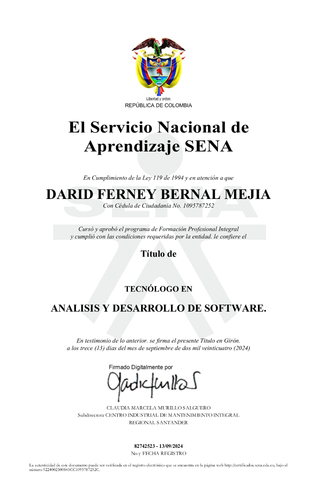
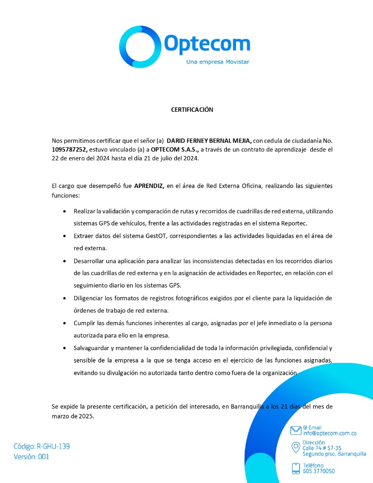
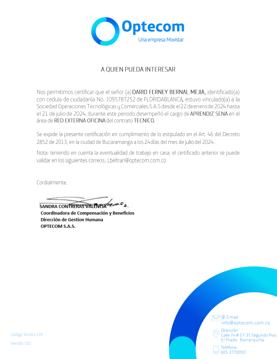

Sobre mí
Desarrollador Full Stack con más de 6 meses de experiencia en desarrollo de software utilizando Java, PHP, Python y JavaScript. He trabajado en el ámbito administrativo y tecnológico. Me apasionan los nuevos desafíos y las nuevas tecnologías, y tengo capacidad de adaptación a las herramientas ya establecidas. Mi objetivo es aprender todas las tecnologías disponibles en el mercado en busca de mejores soluciones.
Habilidades
Proyectos
Control de Elementos
Sistema de gestión y control de entrada y salida de elementos tecnológicos, desarrollado para fortalecer la seguridad, organización y trazabilidad de los recursos del Centro Industrial de Mantenimiento Integral (CIMI).
🛠️ Tecnologías utilizadas
| Tecnología | Aplicación |
|---|---|
| Java | Lenguaje de programación |
| Apache NetBeans IDE | Entorno de desarrollo |
| MySQL | Sistema de gestión de bases de datos |
| JDBC | Conexión entre Java y MySQL |
| Java Swing | Desarrollo de interfaces gráficas |
| Git y GitHub | Control de versiones y almacenamiento del código |
Experiencia
Análisis y desarrollo de sistemas de información
Optecom S.A.S. · 22 de enero – 21 de julio de 2024
- Desarrollo de una aplicación para detectar inconsistencias en recorridos y asignaciones de actividades.
- Extracción y revisión de datos de actividades realizadas y liquidadas.
- Soporte en sitio web.
- Tuve también varias responsabilidades además de desarrollador de software: Auxiliar Administrativo. Cumplir las demás funciones asignadas por el jefe inmediato, relacionadas con el cargo.
Formación
- Tecnólogo en Análisis y Desarrollo de Software
Servicio Nacional de Aprendizaje (SENA) · Ene 2022 – Sep 2024
Contacto
- GitHub: DaridFerneyBernalMejiaADSO
- Correo: daridbernal2004@gmail.com
- LinkedIn: darid-bernal
- WhatsApp: 3185351837 o 3203851420
- Llamada: 3203851420
Certificados

Ver certificado completo

Ver certificado completo

Ver certificado completo